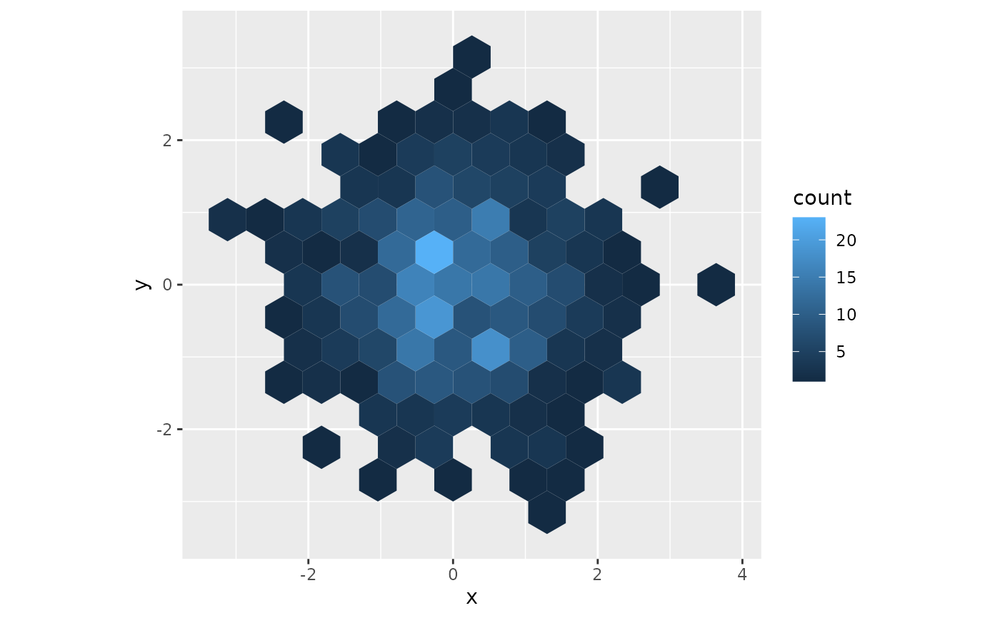
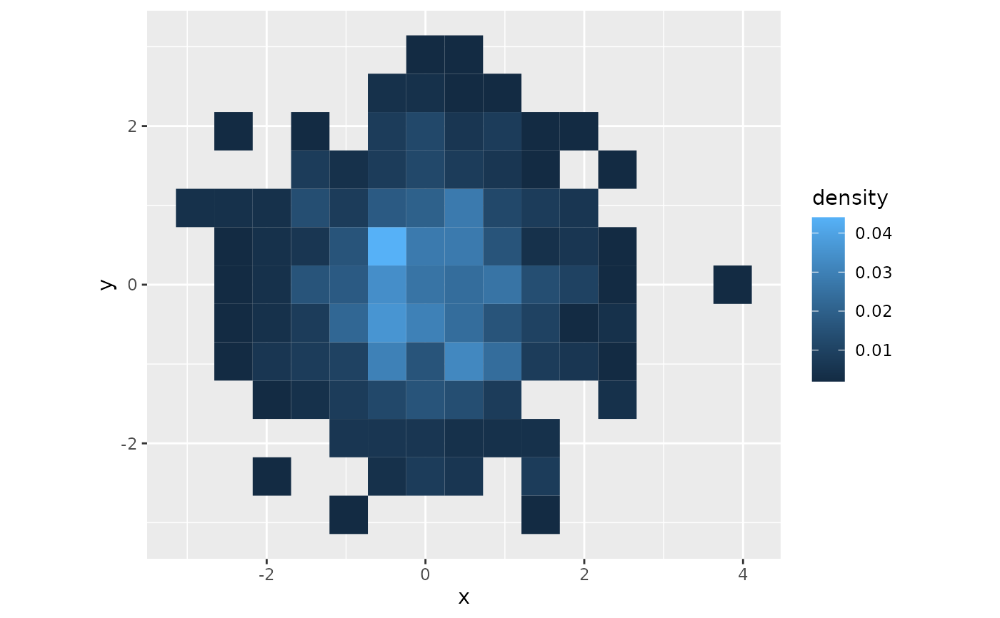

Bins x/y points into hexagons (shape = "hex", the default)
or squares (shape = "square") and draws each cell filled by its count.
The cells are sdv_bins()'s, so they match sdvplot (Python) and
sdvplot-js. Sizes are in data units, so on a court from sdv_surface()
with sdv_court_coords()'s court_x / court_y (feet), radius = 1
is a 1-foot hexagon and side = 1.5 a 1.5-foot square.
Usage
geom_sdv_bins(
mapping = NULL,
data = NULL,
position = "identity",
...,
shape = "hex",
radius = NULL,
side = NULL,
equal_area = FALSE,
na.rm = FALSE,
show.legend = NA,
inherit.aes = TRUE
)Arguments
- mapping, data, position, na.rm, show.legend, inherit.aes
As in
ggplot2::geom_polygon().xandyare required.- ...
Other arguments passed on to
ggplot2::layer(), such ascolour,linewidthoralphaset to a value.- shape
"hex"(the default) or"square".- radius
The hexagons' circumradius; for squares, with
equal_area = TRUE, the circumradius of the hexagon whose area each square has.- side
The squares' side.
- equal_area
For squares: size them by
radiusto the area of a hexagon of that circumradius, so a hex chart and a square chart of the same data have cells of the same area.
Details
Unlike ggplot2::geom_hex(), whose cells stretch with the axes,
these are true hexagons and squares in data space, sized by radius or
side rather than a bin count: under ggplot2::coord_fixed() (as
sdv_surface() draws) they look regular. The lattice has a cell centred
on the data origin (centre court on an sdv_surface() court); bin the
NBA legacy frame with sdv_bins() for cells centred on the hoop.
Each group is binned on its own; facets bin each panel's data.
Computed variables
after_stat(count): points in the cell (the defaultfill).after_stat(density): the cell's share of its group's points.after_stat(cell_id): the cell's id,"x,y"(sdv_bins()).
See also
geom_sdv_bins_interactive() to link each cell to its points.
Examples
library(ggplot2)
set.seed(1)
d <- data.frame(x = rnorm(500), y = rnorm(500))
ggplot(d, aes(x, y)) +
geom_sdv_bins(radius = 0.3) +
coord_fixed()

ggplot(d, aes(x, y)) +
geom_sdv_bins(aes(fill = after_stat(density)),
shape = "square", radius = 0.3, equal_area = TRUE
) +
coord_fixed()
